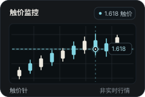

SPIKE FOR IPHONE
看见触价，读懂 K 线，回到交易发生的那一刻。天才交易员，为 iPhone 原生打造。

FEATURE 01 / 03
按时间查看触价记录，对照每次触价的方向与评分。
↔ 拖动机身查看角度，点按切换场景轻扫机身或点按切换场景
AVAILABILITY
适用于 iOS 26 或更高版本。
开放后，使用邀请链接安装测试版。
上架后，通过 App Store 下载与更新。